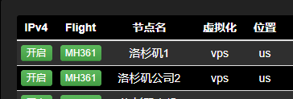
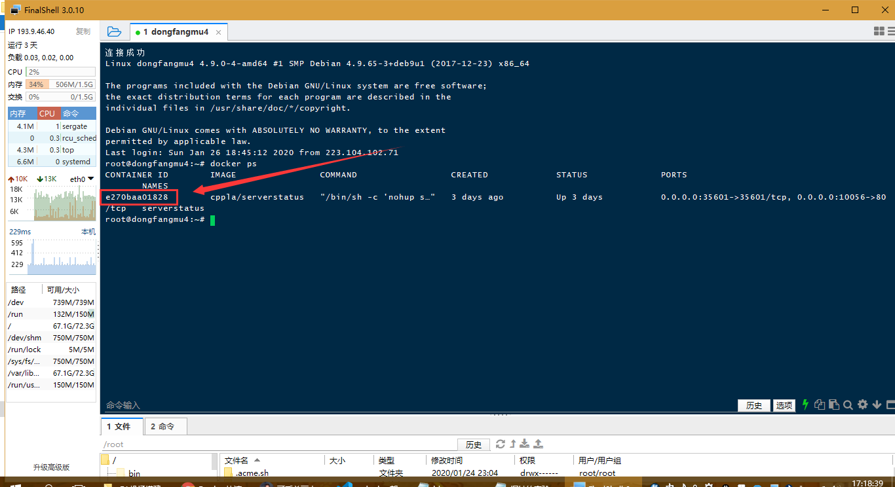
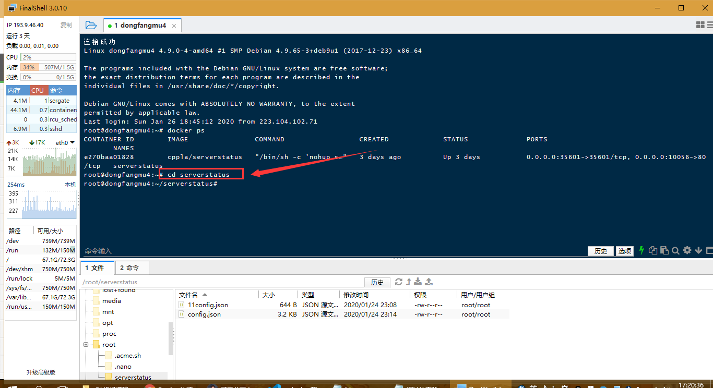
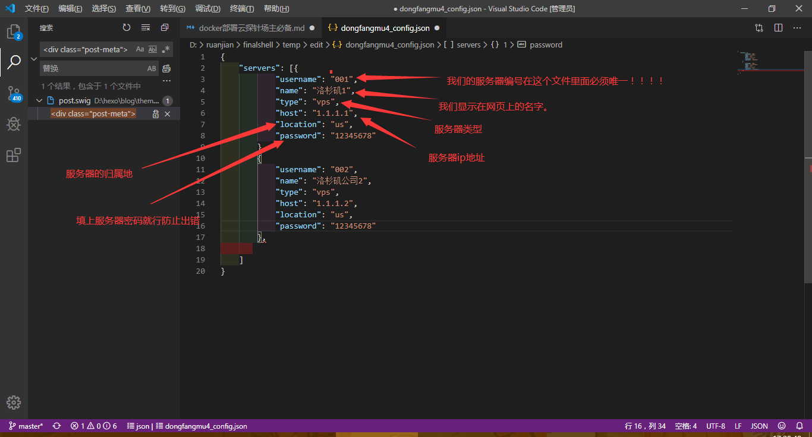

今天高产了，但是还是不如母猪
前言
前几天来试着搭建一个云探针，找了一些方法成功了。最后发现了一个最简单的方法。docker
但是里面涉及到的一些关于文件的修改，我着重说一下。别的不难，
下面就要开始啦作为一个考研党可能这应该是到2020年12月的最后一篇博客了吧。今天也是很高产改了好几篇加了这一篇。
下面开始正文啦
服务端and客户端
关于啥是云探针，就是一个服务器监视软件成品长这样。

服务端
装docker
连接我们的服务器切换root。好像这个对协同没啥要求我用的debian9
然后执行下面的代码装docker
1 | curl -sSL https://get.docker.com/ | sh |
如果不能执行
先装上curl。执行下面的代码，再装docker
1 | apt -y install curl |
安装serverstatus的docker镜像
执行下面的代码
1 | mkdir serverstatus && cd serverstatus && wget https://raw.githubusercontent.com/dongfangmu/ServerStatus/master/autodeploy/config.json |
等执行完了以后你会发现你的ip或者域名：10056已经可以打开了。
比如浏览器打开
1 | http://1.1.1.1:10056 |
修改服务端配置文件config.json
1、首先我们先执行如下查看我们的进程
1 | docker ps |
比如我的是

2、停止我们的进程然后修改配置文件
先停止进程
cd到我们的目录

每个人运行后的容器ID是不一样的，然后输入自己容器id的前4位比如下面
1 | docker stop e270 #注意替换e270为自己显示的容器id |
3、修改配置文件
在serverstatus目录下执行
1 | vi config.json |
文件打开如下图。。。摁A编辑 题外话：我更喜欢下载下来改完再传上去，给大家推荐这个我用的ssh吧！点这里下载

就按照图上改就行！把所有的服务器都加上，（如果服务器是密钥的话就改成密码。设置密码是密钥连接上然后执行方法在文末。我一般比较喜欢用密码的服务器）
改完保存 esc :wq 回车
保存完我们的文件以后我们启动我们的云探针
执行
1 | docker start e270 #注意替换e270为自己显示的容器id |
前面就弄好啦我们去弄客户端
客户端
ssh连接我们的服务器执行以下代码，（先别着急执行看完我说的）
客户端
1 | wget --no-check-certificate -qO client-linux.py 'https://raw.githubusercontent.com/dongfangmu/ServerStatus/master/clients/client-linux.py' && nohup python client-linux.py SERVER=服务端ip USER=用户名 PASSWORD=密码 >/dev/null 2>&1 & |
注意：服务器ip是每个都一样的。用户名是刚才唯一的那个，密码是刚才唯一的用户名下对应的那个。
比如我的第一台就是
1 | wget --no-check-certificate -qO client-linux.py 'https://raw.githubusercontent.com/dongfangmu/ServerStatus/master/clients/client-linux.py' && nohup python client-linux.py SERVER=1.1.1.1 USER=001 PASSWORD=12345678 >/dev/null 2>&1 & |
我的第二台就是
1 | wget --no-check-certificate -qO client-linux.py 'https://raw.githubusercontent.com/dongfangmu/ServerStatus/master/clients/client-linux.py' && nohup python client-linux.py SERVER=1.1.1.2 USER=002 PASSWORD=12345678 >/dev/null 2>&1 & |
你们记得改成自己的，这样执行完打开你刚才的ip:10056就显示绿色啦
密钥改密码
注意：多弄几次一定弄对，有的连接不一定是root，我的一台用户名就是debian.多试试！祝你好运
切换到root角色
1 | sudo -i |
修改SSH配置文件/etc/ssh/sshd_config
1 | vi /etc/ssh/sshd_config |
修改PermitRootLogin和PasswordAuthentication为yes
然后给root用户设置密码。。。有的连接不一定是root，我的一台用户名就是debian这样你就passwd debian
1 | passwd root |
重启SSH服务使修改生效
1 | /etc/init.d/ssh restart |